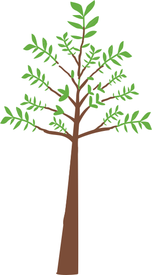
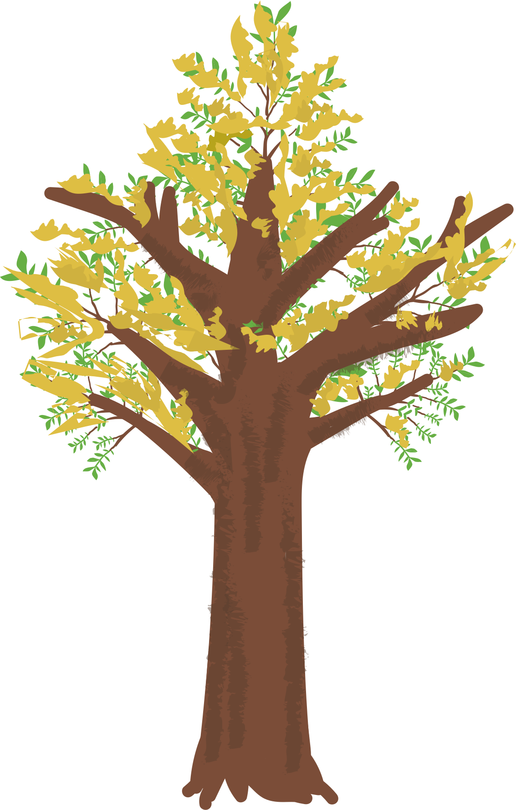
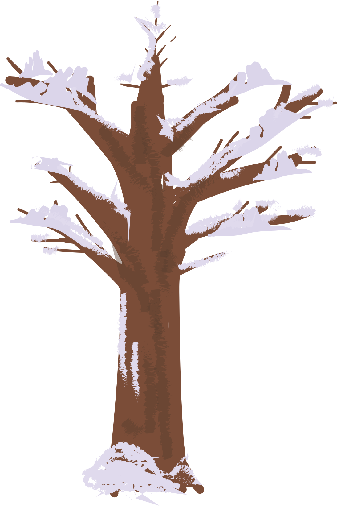

1 / 17

When I am among the trees,
2 / 17
especially the willows and the honey locust,
3 / 17

equally the beech, the oaks and the pines,
4 / 17
they give off such hints of gladness,
5 / 17
I would almost say they save me, and daily.
6 / 17

I am so distant from the hope of myself,
7 / 17

in which I have goodness, and discernment,
8 / 17

and never hurry through the world
9 / 17

but walk slowly, and bow often.
10 / 17

Around me the trees stir in their leaves
11 / 17

and call out, "Stay awhile."
12 / 17

The light flows from their branches.
13 / 17

And they call again, "It's simple," they say,
14 / 17

"and you too have come"
15 / 17

into the world to do this, to go easy, to be filled
16 / 17

with light, and to shine."